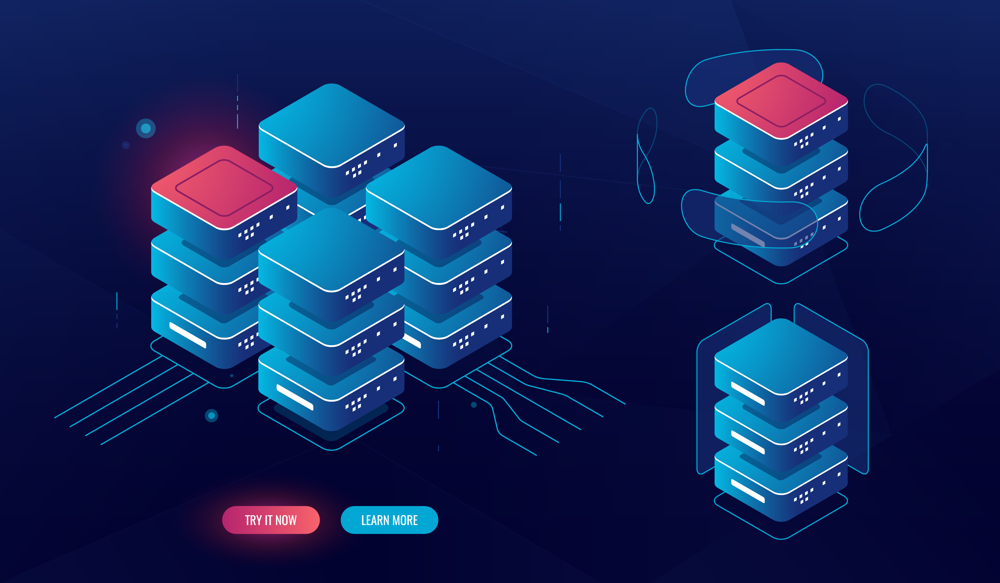

O Que É Back-end?
Se você não faz ideia sobre o que é backend, saiba que é o desenvolvimento de recursos e estrutura por trás da programação, que garante a realização das ações por parte dos usuários em um computador.
Para você entender, tudo que está por trás de um site com uma bela interface é baseado em informações trocadas entre banco de dados e navegador, que não são visíveis pelos usuários.
no ar. Ao fim dos anos 2000, quando o Marketing Digital se tornou a base do que conhecemos hoje, já eram 17 milhões. Vale ressaltar que empresas como Google, PayPal e Amazon já existiam nesse período!
Quais as Diferenças entre Back-end e Front-end?
Se você não faz ideia sobre o que é backend, saiba que é o desenvolvimento de recursos e estrutura por trás da programação, que garante a realização das ações por parte dos usuários em um computador.
Para você entender, tudo que está por trás de um site com uma bela interface é baseado em informações trocadas entre banco de dados e navegador, que não são visíveis pelos usuários.
no ar. Ao fim dos anos 2000, quando o Marketing Digital se tornou a base do que conhecemos hoje, já eram 17 milhões. Vale ressaltar que empresas como Google, PayPal e Amazon já existiam nesse período!
Para que serve o Backend?
A função de um backend está relacionada com servidores, bancos de dados, segurança, estrutura, gerenciamento de conteúdo e atualizações.
Esse tipo de aplicação serve para tratar os dados e também é o local onde ocorrem as inserções, arquivamentos e leituras de dados, por trás de uma aplicação.
De forma resumida, são recursos que garantem a concretização dos processos mais simples em um ambiente eletrônico, como buscas em sites de compra ou até mesmo as ações mais complexas.
O que o Back-end engloba em Seu Universo?

Agora que você entendeu do que se trata essa tecnologia, vamos conhecer como funciona o backend e
os pontos que fazem a interligação dessa programação. Confira!
Bancos de dados e servidores
Em um universo totalmente digitalizado e cheio de inovações, os processos e dados de uma companhia são uma espécie de patrimônio corporativo com muito valor e que, infelizmente, podem ser alvos de ataques.
Ao desenvolver um back-end, o programador precisa seguir algumas diretrizes e boas práticas com base em um padrão de segurança, que garante confiança e proteção contra possíveis invasões, principalmente no que se refere aos roubos de dados.
Quais as Linguagens de Programação Back-end?
Entre as principais linguagens de programação estão o HTML e CSS, elementos responsáveis pela estrutura de um site, servindo como uma espécie de esqueleto da programação e outros recursos adicionais.
O PHP é uma linguagem usada especialmente em páginas de web para adicionar funções a uma página, além de integrar informações do sistema a um banco de dados MySQL.
A Python é também uma das linguagens backend muito fácil de aprender, lançada há três décadas, sendo usada para desenvolvimento web e machine learning.
O Ruby é uma linguagem orientada a aplicações com uma sintaxe parecida a outras linguagens, como o Java e C. O Ruby oferece suporte para sistemas, como Windows, Mac e Linux.